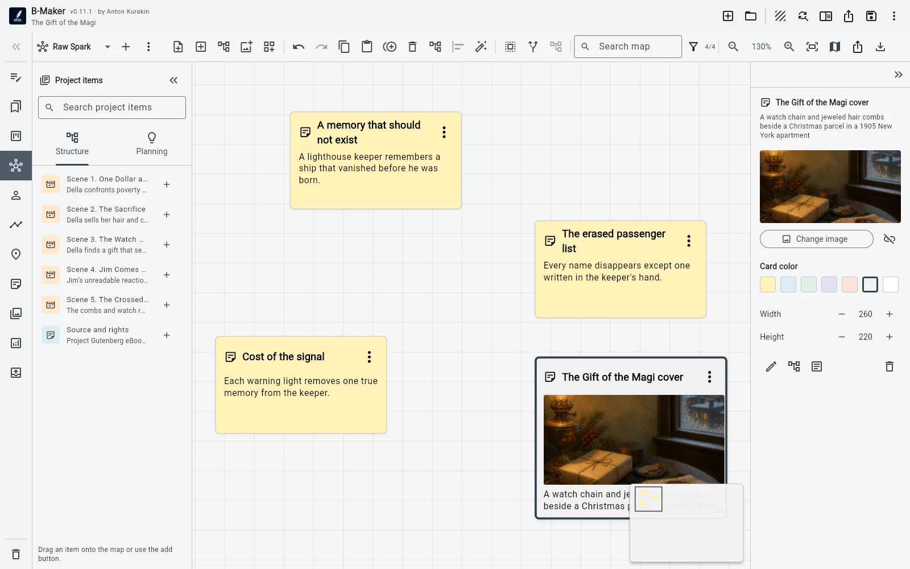
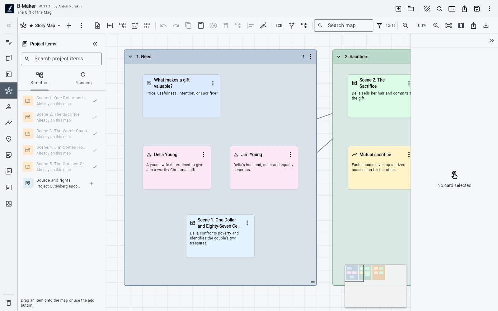

Start with a loose note, let related material accumulate around it, group what belongs together, then turn that group into real manuscript structure when the idea is mature enough.
Most ideas do not arrive as chapters
A chapter rarely appears in your head with a title, a clean outline, three scenes, and the correct place in the manuscript tree. More often it starts as something inconveniently small: a question, a sentence, an image, a contradiction, a scene you can almost see, or a fragment that does not yet belong anywhere.
Traditional writing workflows force an early decision. Put the thought into the manuscript and risk cluttering the structure, or keep it in a separate notes system and accept that you will eventually have to move it. Idea Map exists for the stage before that decision is useful.

Step 1. Put the thought somewhere visible
Create a note on the board and write only what you know. Do not invent a chapter title just to satisfy the software. Do not decide whether it is a scene, a section, or research material before you have enough information.
The spatial position already gives the note context. Put a character nearby. Add an image. Connect a research fragment. If the idea belongs near another topic, move it there. The board can remain messy because at this stage the thinking itself is still messy.
Step 2. Let the project enter the map
The useful shift happens when the board stops being a separate diagram. Existing chapters, scenes, characters, plotlines, and planning cards can appear on Idea Map as project-aware nodes. They are not copied labels representing something elsewhere; they point back to the actual project entities.
That means a new note can sit beside the chapter it might affect, beside the character whose motivation it changes, or between two existing scenes that suddenly need a bridge. You can think visually without creating a second version of the book that has to be kept in sync.

Step 3. A cluster becomes a candidate structure
After a while several notes begin to behave like one thing. Perhaps three fragments clearly belong to the same chapter. Perhaps a relationship map has turned into a scene sequence. Perhaps research that looked independent now forms the argument for a nonfiction section.
Group those items. The group is useful because it is still provisional: you are saying “these probably belong together,” not “this is now Chapter 7 forever.” You can keep rearranging the board, split the group, add material, or leave it alone while you continue writing elsewhere.
Step 4. Convert only when the idea has earned structure
When the cluster is stable enough, convert the note or group into a real manuscript section. B-Maker creates the structural element and an initial text version, so the transition from planning to writing does not require copying the content into another tool.
This is the part I wanted from the workflow: structure should appear as a consequence of thinking, not as a prerequisite for thinking. The map can start vague. The manuscript can stay clean. The boundary between them is movable.

Step 5. The map does not become obsolete
Many planning artifacts die as soon as drafting begins. A whiteboard is useful in week one, then slowly becomes an inaccurate picture of a manuscript that has changed. An integrated map can remain useful because it continues to refer to the same project.
You can keep a board for the whole book, another for one difficult plotline, another for research, and another for a character network. Some notes will become manuscript. Others will remain notes. That is fine: not every idea deserves a chapter.
What this changes in practice
The goal is not to make writers use a visual planning method. If you already know the structure, create the chapter and write it. The point is to remove the penalty for not knowing yet. You can start with a fragment and postpone structural decisions without losing the connection to the manuscript.
That follows the broader B-Maker principle: start with the smallest useful action, then add complexity when the work itself creates a reason for it.
Related guides
Writing software with an integrated Idea Map · B-Maker vs Scapple · How to organize a novel without turning writing into admin work
Start with one unfinished thought.
Open B-Maker, put it on Idea Map, and give it structure only when it needs structure.